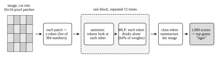
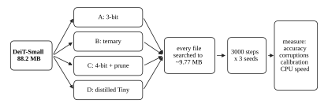

| Model | A function that takes an input (a photo) and returns an output (a label). Inside, it is a very long list of numbers. |
| Weights / parameters | Those numbers. DeiT-Small has 22,050,664 of them. Training is the process of adjusting them. |
| Training, loss | Show the model labelled photos; the loss measures how wrong it is; nudge every weight to make the loss smaller. One nudge = one step. Every route here gets exactly 3000 steps. |
| Learning rate, optimiser | How big each nudge is, and the rule for making it (I use AdamW). Same for every route, so it cannot explain a difference. |
| Train / validation set | Train on one set of photos, test on photos the model has never seen. ImageNet-1k: 1,000 categories; its validation set has 50,000 photos. |
| Top-1 accuracy | Fraction of test photos where the model's single best guess is correct. The number every paper reports. |
| Inference | Using the trained model to answer. Its speed per image is latency. |
A Vision Transformer (ViT) cuts a 224×224 image into 16×16-pixel squares (196 patches). Each patch becomes a token, a list of numbers (384 for DeiT-Small; this length is the model's width). A block then does two things: attention, where every token looks at every other token to gather context ("this stripe is next to an ear"), and an MLP, a small two-layer network applied to each token alone. Attention is split into parallel heads. DeiT-Small stacks 12 blocks. A special class token collects the summary, and a final head layer turns it into 1,000 scores. DeiT is a ViT trained to work well on ImageNet alone; DeiT-Tiny is the same design at half the width (192), with about a quarter of the weights (5.7 million).

Where VLMs fit. A vision-language model (like the image half of a chatbot that reads photos) uses a ViT as its "eyes" and adds a language model. This project studies only the ViT, because the file-size question is the same and a ViT is small enough to test properly. Using the compressed ViT inside a VLM was considered and set aside: class-label-trained models like DeiT are the weakest "eyes" for VLMs, so there is little to measure.
| Bit, byte, MB | A bit is 0 or 1; 8 bits = 1 byte; here 1 MB = 1,000,000 bytes (not 220; that is a MiB). |
| FP32 / FP16 | A weight stored with 32 or 16 bits. DeiT-Small at FP32: 22.05 M × 4 bytes = 88.20 MB. Under 10 MB means about 3.63 bits per weight. |
| The formula | Papers estimate size as parameters × bits ÷ 8. It forgets two real costs: the scale numbers (Section 4) and layers kept at 16 bits. Real 2-bit DeiT-Small: 29.1% bigger than the formula; DeiT-Tiny: 53.5%. Smaller models suffer more, because the layers kept at 16 bits grow with width while the total grows with width squared. |
| Measured size | I write the real file and read its size with os.path.getsize(). I use a raw binary format, because PyTorch's own torch.save wrapper once inflated a file by 45%. |
Quantisation rounds each weight to one of a few allowed values. 3 bits gives 8 values, 4 bits 16. Weights are split into groups (route A: 36 weights per group); each group stores one scale, and each weight stores a small whole number (its code). Weight ≈ code × scale. Smaller groups mean better accuracy but more scales, so a bigger file. Ternary allows only −1, 0, +1 (3 values, not the same as 2-bit, which has 4); five ternary weights fit in one byte (35 = 243 ≤ 256), so 1.6 bits each. Pruning deletes weights. Unstructured pruning zeroes scattered single weights, which does not shrink a file without special formats; structured pruning deletes whole channels so the matrix really gets smaller. Distillation trains a small student to match a big teacher's full set of guesses ("87% dog, 9% wolf"), softened by a temperature (I use 2) so the small guesses carry information. After compressing, the model is retrained briefly with quantisation-aware training (QAT): it computes with rounded weights, but the rounding is skipped when learning (the straight-through estimator), so it learns to live with the damage.
| Route | What it does | Its one "knob", tuned until the file is ~9.77 MB | File |
|---|---|---|---|
| A | 3-bit everything | group size: 36 weights per scale | 9.718 MB |
| B | ternary, base-3 packed | 15 most sensitive layers kept at 8 bits | 9.785 MB |
| C | 4-bit + structured pruning | 24.375% of MLP channels removed (1536 → 1162) | 9.796 MB |
| D | distil into DeiT-Tiny, then 8-bit | 38 layers kept at 16 bits | 9.765 MB |
The knob is found by binary search: guess, write the real file, measure, halve the range, repeat. "Sensitive" layers are ranked by weight variance, a cheap proxy. Two things are held equal, so neither can explain a difference: real bytes (within 0.8%) and training effort (3000 steps, the control used by Kuzmin et al.). The five-model group-size sweep rebuilds route A with groups of 32 to 512 to see how size trades against accuracy.

| Clean accuracy | Top-1 on all 50,000 validation photos. |
| ImageNet-C | The same photos with synthetic damage: 14 types in 4 families (noise, blur, weather, digital), at severity 3 of 5, on 5,000 photos. Made once and cached, so every model sees identical images. |
| Calibration, ECE | When a model says "90% sure", is it right 90% of the time? ECE (expected calibration error) sorts answers into 15 confidence bins and averages the gap. Temperature scaling fixes a uniform over- or under-confidence with one number. |
| Disagreement | Fraction of photos where exactly one of two models is right. Jaccard = photos both get wrong ÷ photos either gets wrong. |
| Latency, Pareto | CPU time per image (median of 50 runs). A model is Pareto-optimal if no other model beats it on every measure at once. A small file is not automatically fast: 3-bit and ternary have no fast CPU routine, so they are expanded back to normal numbers when loaded. |
| Seed | The random number that decides data order and similar choices. Three seeds = three training runs of each route. Differences between seeds are "luck". |
| Luck (seed) floor | How often two runs of the same route disagree (6.3–9.6%). A claim that routes differ must beat this; they do, by 1.2–2.0×. |
| Paired data, McNemar | All models see the same photos, so compare photo by photo. McNemar's test looks only at photos where exactly one model is right and asks if one side wins far too often to be chance. |
| Bootstrap, CI | Re-draw the 5,000 photos at random 10,000 times and recompute the gap; the middle 95% is the confidence interval. If it excludes zero, the gap is real. |
| p-value, Bonferroni | A p-value is the chance of a gap this big by luck alone. Running many tests raises the chance of a fluke, so each must pass a stricter bar: 0.05 ÷ number of tests (Bonferroni). |
| Effective n | 14 damaged copies of 5,000 photos are 5,000 independent photos, not 70,000. Counting 70,000 once inflated my certainty about 3.7×. |
| No p-values over seeds | 3 seeds is too few to test. I report mean ± spread and whether all 3 agree. |
| Accuracy on the line | Miller et al.: damaged accuracy usually rises with clean accuracy. My B/D flip involves a change of architecture, so it is stated as a deployment choice, not a law-breaking result. |
| Pre-registration | Writing predictions down before looking. One of my predictions (seed floor 3–6%) was wrong, and I say so. |
| GPU, MIG | The graphics card does the heavy maths. I had one slice (MIG) of an H100, later a free Kaggle T4. The T4 lacks fast bfloat16, so it uses float16; rounding differs very slightly. |
| Data shards | Images packed into 64 large archive files (WebDataset), because the network disk could read only ~1,500 small files a second. |
| Smoke test | A tiny run (seconds) before every real run. It caught a library error in 30 seconds on Kaggle. |
| Determinism, round-trip | Same input must give same output: the 5,000-photo and 50,000-photo runs agree bit for bit. Every model file decodes and re-encodes to identical bytes, and the decoded files reproduce the original answers. |
| Two-way checks | Every file size is also computed by hand from layer shapes; every statistic is recomputed from saved per-photo results (./reproduce.sh, 40 seconds). |
| Bugs that taught lessons | A file pattern that silently matched zero training files; a copy that was secretly the same object and cost one route 3.9 points; a size drift from rounding a number two different ways. Nine bugs in all; two were visible only because size was measured alongside accuracy. |